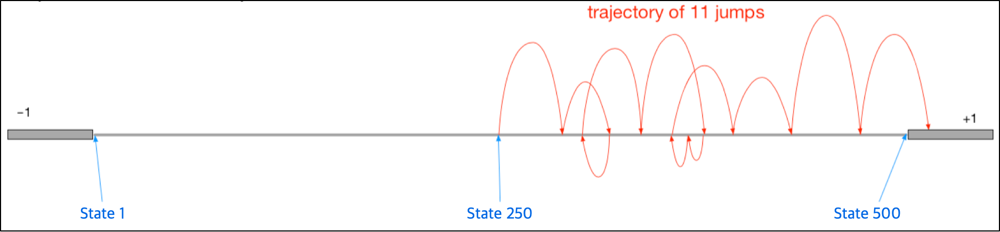
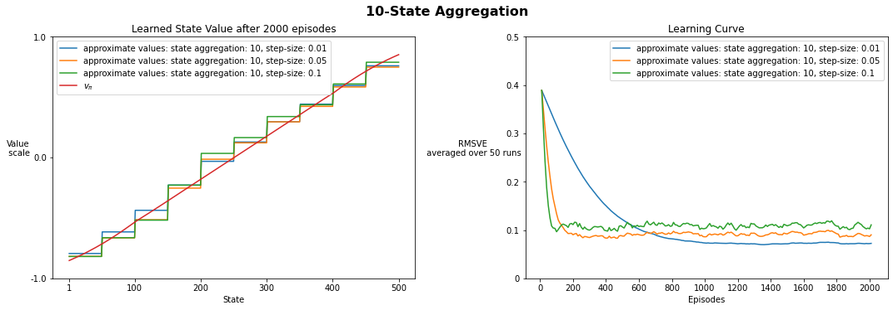
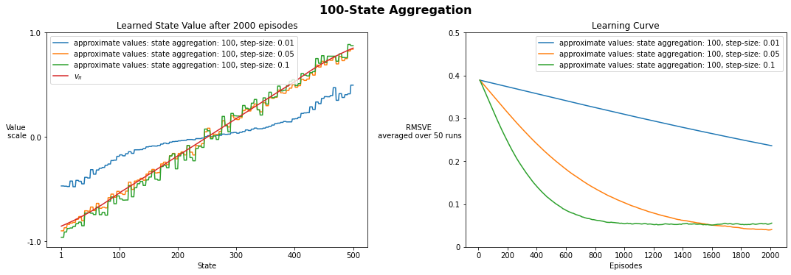
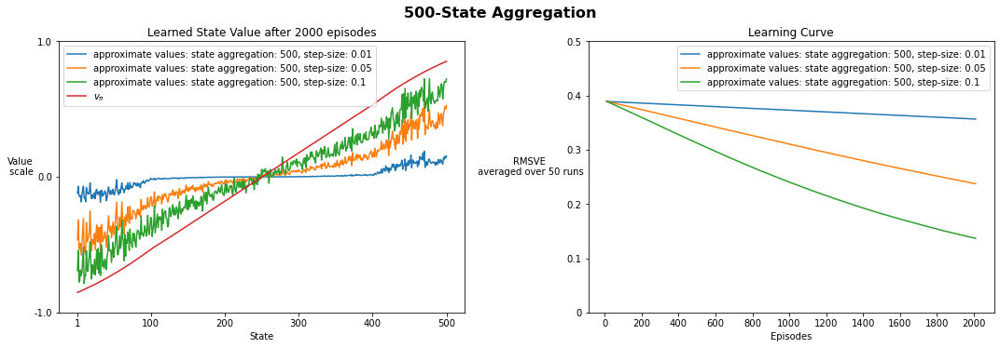

Assignment 1 - TD with State Aggregation
Welcome to your Course 3 Programming Assignment 1. In this assignment, you will implement semi-gradient TD(0) with State Aggregation in an environment with a large state space. This assignment will focus on the policy evaluation task (prediction problem) where the goal is to accurately estimate state values under a given (fixed) policy.
In this assignment, you will:
- Implement semi-gradient TD(0) with function approximation (state aggregation).
- Understand how to use supervised learning approaches to approximate value functions.
- Compare the impact of different resolutions of state aggregation, and see first hand how function approximation can speed up learning through generalization.
Note: You can create new cells for debugging purposes but please do not duplicate any Read-only cells. This may break the grader.
500-State RandomWalk Environment
In this assignment, we will implement and use a smaller 500 state version of the problem we covered in lecture (see “State Aggregation with Monte Carlo”, and Example 9.1 in the textbook). The diagram below illustrates the problem.

There are 500 states numbered from 1 to 500, left to right, and all episodes begin with the agent located at the center, in state 250. For simplicity, we will consider state 0 and state 501 as the left and right terminal states respectively.
The episode terminates when the agent reaches the terminal state (state 0) on the left, or the terminal state (state 501) on the right. Termination on the left (state 0) gives the agent a reward of -1, and termination on the right (state 501) gives the agent a reward of +1.
The agent can take one of two actions: go left or go right. If the agent chooses the left action, then it transitions uniform randomly into one of the 100 neighboring states to its left. If the agent chooses the right action, then it transitions randomly into one of the 100 neighboring states to its right.
States near the edge may have fewer than 100 neighboring states on that side. In this case, all transitions that would have taken the agent past the edge result in termination. If the agent takes the left action from state 50, then it has a 0.5 chance of terminating on the left. If it takes the right action from state 499, then it has a 0.99 chance of terminating on the right.
Your Goal
For this assignment, we will consider the problem of policy evaluation: estimating state-value function for a fixed policy.You will evaluate a uniform random policy in the 500-State Random Walk environment. This policy takes the right action with 0.5 probability and the left with 0.5 probability, regardless of which state it is in.
This environment has a relatively large number of states. Generalization can significantly speed learning as we will show in this assignment. Often in realistic environments, states are high-dimensional and continuous. For these problems, function approximation is not just useful, it is also necessary.
Packages
You will use the following packages in this assignment.
- numpy : Fundamental package for scientific computing with Python.
- matplotlib : Library for plotting graphs in Python.
- RL-Glue : Library for reinforcement learning experiments.
- jdc : Jupyter magic that allows defining classes over multiple jupyter notebook cells.
- tqdm : A package to display progress bar when running experiments
- plot_script : custom script to plot results
Please do not import other libraries - this will break the autograder.
1 | import numpy as np |
Section 1: Create the 500-State RandomWalk Environment
In this section we have provided you with the implementation of the 500-State RandomWalk Environment. It is useful to know how the environment is implemented. We will also use this environment in the next programming assignment.
Once the agent chooses which direction to move, the environment determines how far the agent is moved in that direction. Assume the agent passes either 0 (indicating left) or 1 (indicating right) to the environment.
Methods needed to implement the environment are: env_init, env_start, and env_step.
env_init: This method sets up the environment at the very beginning of the experiment. Relevant parameters are passed throughenv_infodictionary.env_start: This is the first method called when the experiment starts, returning the start state.env_step: This method takes in action and returns reward, next_state, and is_terminal.
1 | # --------------- |
Section 2: Create Semi-gradient TD(0) Agent with State Aggregation
Now let’s create the Agent that interacts with the Environment.
You will create an Agent that learns with semi-gradient TD(0) with state aggregation.
For state aggregation, if the resolution (num_groups) is 10, then 500 states are partitioned into 10 groups of 50 states each (i.e., states 1-50 are one group, states 51-100 are another, and so on.)
Hence, 50 states would share the same feature and value estimate, and there would be 10 distinct features. The feature vector for each state is a one-hot feature vector of length 10, with a single one indicating the group for that state. (one-hot vector of length 10)
Section 2-1: Implement Useful Functions
Before we implement the agent, we need to define a couple of useful helper functions.
Please note all random method calls should be called through random number generator. Also do not use random method calls unless specified. In the agent, only agent_policy requires random method calls.
Section 2-1a: Selecting actions
In this part we have implemented agent_policy() for you.
This method is used in agent_start() and agent_step() to select appropriate action.
Normally, the agent acts differently given state, but in this environment the agent chooses randomly to move either left or right with equal probability.
Agent returns 0 for left, and 1 for right.
1 | # --------------- |
Section 2-1b: Processing State Features with State Aggregation
In this part you will implement get_state_feature()
This method takes in a state and returns the aggregated feature (one-hot-vector) of that state.
The feature vector size is determined by num_groups. Use state and num_states_in_group to determine which element in the feature vector is active.
get_state_feature() is necessary whenever the agent receives a state and needs to convert it to a feature for learning. The features will thus be used in agent_step() and agent_end() when the agent updates its state values.
1 | # ----------- |
Run the following code to verify your get_state_feature() function.
1 | # ----------- |
1st group: [1. 0. 0. 0. 0.]
2nd group: [0. 1. 0. 0. 0.]
3rd group: [0. 0. 1. 0. 0.]
4th group: [0. 0. 0. 1. 0.]
5th group: [0. 0. 0. 0. 1.]
Section 2-2: Implement Agent Methods
Now that we have implemented all the helper functions, let’s create an agent. In this part, you will implement agent_init(), agent_start(), agent_step() and agent_end(). You will have to use agent_policy() that we implemented above. We will implement agent_message() later, when returning the learned state-values.
To save computation time, we precompute features for all states beforehand in agent_init(). The pre-computed features are saved in self.all_state_features numpy array. Hence, you do not need to call get_state_feature() every time in agent_step() and agent_end().
The shape of self.all_state_features numpy array is (num_states, feature_size), with features of states from State 1-500. Note that index 0 stores features for State 1 (Features for State 0 does not exist). Use self.all_state_features to access each feature vector for a state.
When saving state values in the agent, recall how the state values are represented with linear function approximation.
State Value Representation: $\hat{v}(s,\mathbf{w}) = \mathbf{w}\cdot\mathbf{x^T}$ where $\mathbf{w}$ is a weight vector and $\mathbf{x}$ is the feature vector of the state.
When performing TD(0) updates with Linear Function Approximation, recall how we perform semi-gradient TD(0) updates using supervised learning.
semi-gradient TD(0) Weight Update Rule: $\mathbf{w_{t+1}} = \mathbf{w_{t}} + \alpha [R_{t+1} + \gamma \hat{v}(S_{t+1},\mathbf{w}) - \hat{v}(S_t,\mathbf{w})] \nabla \hat{v}(S_t,\mathbf{w})$
1 | # ----------- |
Run the following code to verify agent_init()
1 | # ----------- |
num_states: 500
num_groups: 10
step_size: 0.1
discount_factor: 1.0
weights shape: (10,)
weights init. value: [0. 0. 0. 0. 0. 0. 0. 0. 0. 0.]
Run the following code to verify agent_start().
Although there is randomness due to rand_generator.choice() in agent_policy(), we control the seed so your output should match the expected output.
Make sure rand_generator.choice() is called only once per agent_policy() call.
1 | # ----------- |
Agent state: 250
Agent selected action: 1
Run the following code to verify agent_step()
1 | # ----------- |
Updated weights: [-0.26 0.5 1. -0.5 1.5 -0.5 1.5 0. -0.5 -1. ]
last state: 120
last action: 1
Run the following code to verify agent_end()
1 | # ----------- |
Updated weights: [-0.35 0.5 1. -0.5 1.5 -0.5 1.5 0. -0.5 -1. ]
Expected output: (Note only the 1st element was changed, and the result is different from agent_step() )
Initial weights: [-1.5 0.5 1. -0.5 1.5 -0.5 1.5 0. -0.5 -1. ]
Updated weights: [-0.35 0.5 1. -0.5 1.5 -0.5 1.5 0. -0.5 -1. ]
Section 2-3: Returning Learned State Values
You are almost done! Now let’s implement a code block in agent_message() that returns the learned state values.
The method agent_message() will return the learned state_value array when message == 'get state value'.
Hint: Think about how state values are represented with linear function approximation. state_value array will be a 1D array with length equal to the number of states.
1 | %%add_to TDAgent |
Run the following code to verify get_state_val()
1 | # ----------- |
State value shape: (20,)
Initial State value for all states: [0. 0. 0. 0. 0. 0. 0. 0. 0. 0. 0. 0. 0. 0. 0. 0. 0. 0. 0. 0.]
Expected Output:
State value shape: (20,)
Initial State value for all states: [0. 0. 0. 0. 0. 0. 0. 0. 0. 0. 0. 0. 0. 0. 0. 0. 0. 0. 0. 0.]
Section 3: Run Experiment
Now that we’ve implemented all the components of environment and agent, let’s run an experiment! We will plot two things: (1) the learned state value function and compare it against the true state values, and (2) a learning curve depicting the error in the learned value estimates over episodes. For the learning curve, what should we plot to see if the agent is learning well?
Section 3-1: Prediction Objective (Root Mean Squared Value Error)
Recall that the Prediction Objective in function approximation is Mean Squared Value Error $\overline{VE}(\mathbf{w}) \doteq \sum\limits_{s \in \mathcal{S}}\mu(s)[v_\pi(s)-\hat{v}(s,\mathbf{w})]^2$
We will use the square root of this measure, the root $\overline{VE}$ to give a rough measure of how much the learned values differ from the true values.
calc RMSVE() computes the Root Mean Squared Value Error given learned state value $\hat{v}(s, \mathbf{w})$.
We provide you with true state value $v_\pi(s)$ and state distribution $\mu(s)$
1 | # --------------- |
Section 3-2a: Run Experiment with 10-State Aggregation
We have provided you the experiment/plot code in the cell below.
1 | # --------------- |
We will first test our implementation using state aggregation with resolution of 10, with three different step sizes: {0.01, 0.05, 0.1}.
Note that running the experiment cell below will take _approximately 5 min_.
1 | # --------------- |
Setting - num. agg. states: 10, step_size: 0.01
100%|██████████| 50/50 [01:32<00:00, 1.85s/it]
Setting - num. agg. states: 10, step_size: 0.05
100%|██████████| 50/50 [01:33<00:00, 1.87s/it]
Setting - num. agg. states: 10, step_size: 0.1
100%|██████████| 50/50 [01:31<00:00, 1.83s/it]

Is the learned state value plot with step-size=0.01 similar to Figure 9.2 (p.208) in Sutton and Barto?
(Note that our environment has less states: 500 states and we have done 2000 episodes, and averaged the performance over 50 runs)
Look at the plot of the learning curve. Does RMSVE decrease over time?
Would it be possible to reduce RMSVE to 0?
You should see the RMSVE decrease over time, but the error seems to plateau. It is impossible to reduce RMSVE to 0, because of function approximation (and we do not decay the step-size parameter to zero). With function approximation, the agent has limited resources and has to trade-off the accuracy of one state for another state.
Run the following code to verify your experimental result.
1 | # ----------- |
Your experiment results are correct!
Section 3-2b: Run Experiment with Different State Aggregation Resolution and Step-Size
In this section, we will run some more experiments to see how different parameter settings affect the results!
In particular, we will test several values of num_groups and step_size. Parameter sweeps although necessary, can take lots of time. So now that you have verified your experiment result, here we show you the results of the parameter sweeps that you would see when running the sweeps yourself.
We tested several different values of num_groups: {10, 100, 500}, and step-size: {0.01, 0.05, 0.1}. As before, we performed 2000 episodes per run, and averaged the results over 50 runs for each setting.
Run the cell below to display the sweep results.
1 | # --------------- |



Wrapping up
Let’s think about the results of our parameter study.
State Aggregation
Which state aggregation resolution do you think is the best after running 2000 episodes? Which state aggregation resolution do you think would be the best if we could train for only 200 episodes? What if we could train for a million episodes?
Should we use tabular representation (state aggregation of resolution 500) whenever possible? Why might we want to use function approximation?
From the plots, using 100 state aggregation with step-size 0.05 reaches the best performance: the lowest RMSVE after 2000 episodes. If the agent can only be trained for 200 episodes, then 10 state aggregation with step-size 0.05 reaches the lowest error. Increasing the resolution of state aggregation makes the function approximation closer to a tabular representation, which would be able to learn exactly correct state values for all states. But learning will be slower.
Step-Size
- How did different step-sizes affect learning?
The best step-size is different for different state aggregation resolutions. A larger step-size allows the agent to learn faster, but might not perform as well asymptotically. A smaller step-size causes it to learn more slowly, but may perform well asymptotically.
Congratulations! You have successfully implemented Course 3 Programming Assignment 1.
You have implemented semi-gradient TD(0) with State Aggregation in a 500-state Random Walk. We used an environment with a large but discrete state space, where it was possible to compute the true state values. This allowed us to compare the values learned by your agent to the true state values. The same state aggregation function approximation can also be applied to continuous state space environments, where comparison to the true values is not usually possible.
You also successfully applied supervised learning approaches to approximate value functions with semi-gradient TD(0).
Finally, we plotted the learned state values and compared with true state values. We also compared learning curves of different state aggregation resolutions and learning rates.
From the results, you can see why it is often desirable to use function approximation, even when tabular learning is possible. Asymptotically, an agent with tabular representation would be able to learn the true state value function, but it would learn much more slowly compared to an agent with function approximation. On the other hand, we also want to ensure we do not reduce discrimination too far (a coarse state aggregation resolution), because it will hurt the asymptotic performance.